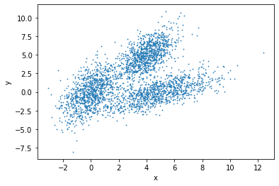

The goal of unsupervised learning is to discover hidden patterns in any unlabeled data. One of the approaches to unsupervised learning is clustering. In this tutorial, we will discuss clustering, its types and a few algorithms to find clusters in data. Clustering groups data points based on their similarities. Each group is called a cluster and contains data points with high similarity and low similarity with data points in other clusters. In short, data points of a cluster are more similar to each other than they are to the data points of other clusters. The goal of clustering is to divide a set of data points in such a way that similar items fall into the same cluster, whereas dissimilar data points fall in different clusters. Further in this tutorial, we will discuss ideas on how to choose different metrics of similarity between data points and use them in different clustering algorithms.
Clustering is crucial in multiple research fields in BioInformatics such as analyzing unlabeled data which can be gene expressions profiles, biomedical images and so on. For example, clustering is often used in gene expression analysis to find groups of genes with similar expression patterns which may provide a useful understanding of gene functions and regulations, cellular processes and so on. For more details, please refer to ref1 and ref2.
We represent an observation/sample/data point as an n-dimensional vector and many such data points constitute a dataset. To show an example, let us assume that a dataset, shown in Figure 1, contains many samples and each sample has two dimensions each:
Figure 1: Sample data before clustering
Clustering reveals the following three groups, indicated by different colors:
Figure 2: Sample data after clustering
Clustering is divided into two subgroups based on the assignment of data points to clusters:
Hard: Each data point is assigned to exactly one cluster. One example is k-means clustering.
Soft: Each data point is assigned a probability or likelihood of being in a cluster. One example is expectation-maximization (EM) algorithm.
There are many algorithms available for data clustering which use different ways to establish similarity between data points. The clustering algorithms can be broadly divided into many categories such as connectivity model, centroid model, density model, distribution model, group model, graph-based model and so on. Some of these are discussed below:
Connectivity model: This model assigns higher similarity to data points which are closer in one or multi-dimensional space than those points which are farther away. There are two approaches - first, it categorises all data points into different clusters and then merges the data points in relation to the distances among them. Second, it categorises all data points into one single cluster and then partitions them into different clusters as the distance increases. This model is easy to understand but has problems in handling large datasets. One example is hierarchical clustering and its variants.
Centroid model: It is an iterative clustering algorithm in which similarity is based on the proximity of a data point to the centroids of the clusters. K-means clustering is one example of this model. It needs a number of clusters before running and then divides data points into these many clusters iteratively. Therefore, to use k-means, users should acquire some prior knowledge about the dataset.
Density model: This model searches one or multi-dimensional space for dense regions (having a large number of data points in a small region). A popular example of a density model is DBSCAN.
In this tutorial, we will go through three clustering algorithms - hierarchical clustering, k-means, DBSCAN, and a comparison between these methods. Further, we will discuss their parameters and how to apply them to find clusters in the iris flower dataset and a few other datasets.
Clustering distance measures
Clustering groups similar data points and requires a metric or measure to compute a degree of similarity or dissimilarity of data points. Two main types of measures are distance and similarity. The smaller the distance between two objects, the more similar they are to each other. Moreover, the type of distance measure depends on the problem and one measure may not work with all kinds of problems.
Many clustering algorithms use distance measures to determine the similarity or dissimilarity between any pair of data points. A valid distance measure should be symmetric and obtains its minimum value (usually zero) in case of identical data points. By computing the distance or (dis)similarity between each pair of observations, a dissimilarity or distance matrix is obtained.
The choice of a distance measure is crucial in clustering. It defines how the similarity of two elements (x, y) is calculated as it influences the shape of the clusters. The classical distance measures are euclidean and manhattan distances. For the most common clustering algorithms, the default distance measure is euclidean. If the euclidean distance is chosen, then observations having high magnitudes of their respective features will be clustered together. The same holds for the observations having low magnitudes of their respective features. In Figure 3, we group the cells using euclidean distance and their distance matrix.
Figure 3: Euclidean distance between three points (R, P, V) across three features (G1, G2, G3)
question Questions
Why are there zeroes along the diagonal of the above example distance matrix?
Is there any symmetry in this matrix?
solution Solution
The distance between a point to itself is zero.
The distance between point a to point b is the same as the distance between point b to point a using the Euclidean distance metric.
Other dissimilarity measures exist such as correlation-based distances, which are widely used for gene expression data analyses. Correlation-based distance considers two objects to be similar if their features are highly correlated, even though the observed values may be far apart in terms of euclidean distance. The distance between the two objects is 0 when they are perfectly correlated. Pearson’s correlation is quite sensitive to outliers. This does not matter when clustering samples because the correlation is over thousands of genes. However, it is important to be aware of the possible impact of outliers. This can be mitigated by using Spearman’s correlation instead of Pearson’s correlation.
Different clustering approaches
Hierarchical clustering
Hierarchical clustering creates a hierarchy of clusters. It starts with all the data points assigned to clusters of their own. Then, the two nearest clusters are merged into the same cluster. In the end, the algorithm terminates when there is only one cluster left.
Following are the steps that are performed during hierarchical clustering:
In the beginning, every data point in the dataset is treated as a cluster which means that we have N clusters at the beginning of the algorithm for a dataset of size N.
The distance between all the points is calculated and two points closest to each other are merged together to form a new cluster.
Next, the point which is closest to the cluster formed in step 2, will be merged to the cluster.
Steps 2 and 3 are repeated until one large cluster is created.
Finally, this large cluster is divided into K small clusters with the help of dendrograms.
Let’s now see how dendrograms help in hierarchical clustering.
Figure 4: Hierarchical clustering
All data points are chosen at the bottom and each one is assigned to a separate cluster. Then, the two closest clusters are merged till just one cluster is left at the top. From the dendrogram thus formed, the distance between two clusters can be determined by computing the height at which two clusters are merged.
By looking at the dendrogram, the clusters can be observed showing different groups in the best way. The optimal number of clusters is the number of vertical lines in the dendrogram cut by a horizontal line that can transverse maximum distance vertically without intersecting a cluster.
In the above example, the best choice of the number of clusters will be 4 as the red horizontal line in the dendrogram below covers maximum vertical distance AB. For more details, please read here.
Figure 5: Hierarchical clustering
This algorithm explained above uses the bottom-up approach. It is also possible to follow the top-down approach starting with all data points assigned in the same cluster and recursively performing splits till each data point is assigned a separate cluster. The decision of merging two clusters is taken based on the proximity of these clusters.
comment Background of the iris dataset
The iris flower dataset or Fisher’s iris dataset is a multivariate dataset introduced by the British statistician and biologist Ronald Fisher in his 1936 paper (Fisher 1936).
Each row of the table represents an iris flower, including its species and dimensions of its botanical parts, sepal and petal, in centimeters.
For more history of this dataset read here Wikipedia.
At the first step, we should upload the iris dataset and two other datasets which will be used at the end of the tutorial.
hands_on Hands-on: Data upload
Importgalaxy-upload the file iris.csv from Zenodo or from the data library
Open the Galaxy Upload Manager (galaxy-upload on the top-right of the tool panel)
Select Paste/Fetch Data
Paste the link into the text field
Press Start
Close the window
By default, Galaxy uses the URL as the name, so rename the files with a more useful name.
tip Tip: Importing data from a data library
As an alternative to uploading the data from a URL or your computer, the files may also have been made available from a shared data library:
Go into Shared data (top panel) then Data libraries
Find the correct folder (ask your instructor)
Select the desired files
Click on the To History button near the top and select as Datasets from the dropdown menu
In the pop-up window, select the history you want to import the files to (or create a new one)
Click on Import
Renamegalaxy-pencil the datasets to iris, circles and moon respectively.
tip Tip: Renaming a dataset
Click on the galaxy-pencilpencil icon for the dataset to edit its attributes
In the central panel, change the Name field
Click the Save button
Check the datatype
Click on the history item to expand it to get more information.
The datatype of the iris dataset should be csv.
Changegalaxy-pencil the datatype if it is different than csv.
Option 1: Datatypes can be autodetected
Option 2: Datatypes can be manually set
tip Tip: Detecting the datatype
Click on the galaxy-pencilpencil icon for the dataset to edit its attributes
In the central panel, click on the galaxy-chart-select-dataDatatypes tab on the top
Select datatypes
Click the Detect datatype button
tip Tip: Changing the datatype
Click on the galaxy-pencilpencil icon for the dataset to edit its attributes
In the central panel, click on the galaxy-chart-select-dataDatatypes tab on the top
Select csv
Click the Change datatype button
Our objective is to categorise similar flowers in different groups (Figure 6). We know that we have 3 species of iris flowers (versicolor, virginica, setosa) with
50 samples for each. These species look very much alike as shown in the figure below.
Figure 6: 3 species of iris flowers
In our dataset, we have the following features measured for each flower: petal length, petal width, sepal length, sepal width
Figure 7 shows the dendrogram of these data.
Figure 7: Iris data hierarchical clustering
We will apply hierarchical clustering to the iris dataset to find clusters based on two features (of flowers) - sepal length and width.
Hint: Please find the Numeric Clustering tool in the Statistics tool section.
hands_on Hands-on: Hierarchical clustering
Numeric Clusteringtool with the following clustering parameters:
“Select the format of input data”: Tabular Format (tabular,txt)
param-file“Data file with numeric values”: iris
param-check“Does the dataset contain header”: Yes
param-select“Choose how to select data by column”: All columns EXCLUDING some by column header name(s)
Rename the generated file to Hierarchical clustering
If you view the result table, you can see the last column is the label for each cluster and as you see, all the setosa samples are grouped in one cluster and two other species (versicolor and virginica) are grouped in the second cluster. From Figure 6, it is obvious that versicolor and virginica are more similar to each other.
Visualize hierarchical clustering
The resulting candidate clustering can be visualized using the Scatterplot with ggplot2 tool. Each sample is color-coded based on its clustering for that sample.
Let’s visualize the clustering results to see how groups have been built. Hint: Please find the Scatterplot with ggplot2 tool in the Graph/Display data tool section.
hands_on Hands-on: Visualize hierarchical clustering result
Scatterplot with ggplot2tool with the following parameters:
“Plot title”: Hierarchical clustering in iris data
“Label for x axis”: Sepal length
“Label for y axis”: Sepal width
In “Advanced Options”:
“Data point options”: User defined point options
“relative size of points”: 2.0
“Plotting multiple groups”: Plot multiple groups of data on one plot
“column differentiating the different groups”: 6
“Color schemes to differentiate your groups”: Set 2 - predefined color pallete
In “Output options”:
param-text“width of output”: 7.0
param-text“height of output”: 5.0
param-text“dpi of output”: 175.0
Viewgalaxy-eye the resulting plot
Rename to Hierarchical scatter plot
Figure 8: Hierarchical clustering scatter plot
K-means clustering
K-means clustering is the most commonly used unsupervised machine learning algorithm for partitioning a given dataset into a set of k clusters, where k represents the number of groups pre-specified by the user. In k-means clustering, each cluster is represented by its center or centroid which corresponds to the mean of points assigned to the cluster. The basic idea behind k-means clustering is to define clusters and their centroids such that the total intra-cluster variation is minimized.
K-means is popular because of its speed and scalability. Many variants of the k-means algorithm such as Lloyd’s algorithm, k-medians algorithms and so on are available. The standard algorithm defines the total within-cluster variation as the sum of squared Euclidean distances between items and the corresponding centroid. K is a hyperparameter of the algorithm and the k-means algorithm can be summarized as follows:
Specify the number of clusters (k) to be created (to be specified by users).
Select k data points randomly from the dataset as the initial cluster centers or means.
Assign each data point to their closest centroid, based on the euclidean distance between a data point and its centroid.
For each of the k clusters update cluster centroid by calculating the new mean values of all the data points in the cluster.
Iteratively minimize the total within the sum of squares: iterate steps 3 and 4 until the cluster assignments stop changing or the maximum number of iterations is reached.
The parameters that minimize the cost function are learned through an iterative process of assigning data points to clusters and then moving the clusters. A restriction for the k-means algorithm is that the dataset should be continuous.
hands_on Hands-on: K-means clustering
Numeric Clusteringtool with the following clustering parameters:
“Select the format of input data”: Tabular Format (tabular,txt)
param-file“Data file with numeric values”: iris
param-check“Does the dataset contain header”: Yes
param-select“Choose how to select data by column”: All columns EXCLUDING some by column header name(s)
param-text“Type header name(s)”: Species
param-select“Clustering Algorithm”: KMeans
In “Advanced options”
param-text“Number of clusters”: 2
Rename the generated file to k-means clustering
Visualize k-means clustering
hands_on Hands-on: Visualize k-means clustering result
Scatterplot with ggplot2tool with the following parameters:
“Data point options”: User defined point options
“relative size of points”: 2.0
“Plotting multiple groups”: Plot multiple groups of data on one plot
“column differentiating the different groups”: 6
“Color schemes to differentiate your groups”: Set 2 - predefined color pallete
In “Output options”:
param-text“width of output”: 7.0
param-text“height of output”: 5.0
param-text“dpi of output”: 175.0
Viewgalaxy-eye the resulting plot
Rename to k-means scatter plot
Figure 9: K-means clustering scatter plot
question Question
How to choose the right number of expected clusters (k)?
solution Solution
Major difficulty found with k-means is the choice of the number of clusters. Different methods are proposed to solve this problem.
Here, we provide a simple solution. The idea is to compute k-means clustering using different values of clusters k. Next, the within sum of squares is drawn according to the number of clusters. The location of a bend (knee) in the plot is generally considered as an indicator of the appropriate number of clusters.
Figure 10: Optimal number of clusters
The plot above represents the variance within the clusters. It decreases as k increases, but it can be seen as a bend (or “elbow”) at k = 4. This bend indicates that
additional clusters beyond the fourth have little value.
question Questions
What are the differences between k-means and hierarchical clustering techniques
solution Solution
Hierarchical clustering has difficulties in handling large data well but k-means clustering can. This is because the time complexity (of Lloyd’s variant) of k-means is linear (O(nkdi), n = number of data points, k = number clusters, d = data point dimensions and i = number of iterations) while the time-complexity of the optimal hierarchical clustering is quadratic (O(n2)).
K-means works well when the clusters are spherical (like circle in 2D, sphere in 3D) in shape. But, when the clusters are of arbitrary geometrical shapes, the performance suffers.
K-means clustering requires prior knowledge of the number of clusters. It does not learn the number of clusters from data. But, for the hierarchical clustering it is not necessary.
DBSCAN clustering
DBSCAN (Density-based spatial clustering of applications with noise) is a popular clustering algorithm and finds clusters as regions of high density followed by regions of low density. Clusters found by DBSCAN can be of any shape, as opposed to k-means which works well if the clusters are spherical in shape. The central component of the DBSCAN algorithm are the core samples which are present in the areas of high density. A cluster is, therefore, a set of core samples close to one other (measured by some distance measure) and a set of non-core samples that are close to core samples (but are not core samples themselves). There are two important parameters in DBSCAN algorithm - min_samples is the number of samples in a neighborhood for a point to be considered as a core point and eps is the maximum distance (between two samples) for a sample to be considered as in the neighborhood of the other. Higher the value of min_samples or lower the value of eps indicate higher density necessary to form a cluster. DBSCAN does not require one to specify the number of clusters in the data a priori, as opposed to k-means.
hands_on Hands-on: DBSCAN clustering
Numeric Clusteringtool with the following clustering parameters:
“Select the format of input data”: Tabular Format (tabular,txt)
param-file“Data file with numeric values”: iris
param-check“Does the dataset contain header”: Yes
param-select“Choose how to select data by column”: All columns EXCLUDING some by column header name(s)
param-text“Type header name(s)”: Species
param-select“Clustering Algorithm”: DBSCAN
Rename the generated file to DBSCAN clustering
Visualise DBSCAN clustering
hands_on Hands-on: Visualize DBSCAN clustering result
Scatterplot with ggplot2tool with the following parameters:
“Data point options”: User defined point options
“relative size of points”: 2.0
“Plotting multiple groups”: Plot multiple groups of data on one plot
“column differentiating the different groups”: 6
“Color schemes to differentiate your groups”: Set 2 - predefined color pallete
In “Output options”:
param-text“width of output”: 7.0
param-text“height of output”: 5.0
param-text“dpi of output”: 175.0
Viewgalaxy-eye the resulting plot:
Rename to DBSCAN scatter plot
Figure 11: DBSCAN clustering scatter plot
You will also notice that the green points (factor = -1) in the plot are not contained within any cluster. DBSCAN does not necessarily categorize every data point, and is therefore works very well with handling outliers in a dataset.
question Question
How can we evaluate the clustering results?
solution Solution
Clustering is an unsupervised learning algorithm; there are no labels or ground truth to compare with the clusters. However, we can still evaluate the performance of the algorithm using intrinsic measures.
There is a performance measure for clustering evaluation which is called the silhouette coefficient. It is a measure of the compactness and separation of the clusters.
It increases as the quality of the clusters increase; it is large for compact clusters that are far from each other and small for large, overlapping clusters. The silhouette coefficient is calculated per instance; for a set of instances, it is calculated as the mean of the individual sample score.
Applying clustering algorithms on multiple datasets
We can apply the same steps on the other datasets such moon and circles datasets (already imported) which are generated using scikit-learn methods.
Visualise datasets
hands_on Hands-on: Visualize scatter plot of data
Scatterplot with ggplot2tool with the following parameters:
tip Tip: Select multiple datasets
Click on param-filesMultiple datasets
Select several files by keeping the Ctrl (or
COMMAND) key pressed and clicking on the files of interest
param-file“Input tabular dataset”: circles and moon as multiple datasets
“Column to plot on x-axis”: 1
“Column to plot on y-axis”: 2
“Plot title”: Scatter Plot
“Label for x axis”: X
“Label for y axis”: Y
In “Output options”:
param-text“width of output”: 7.0
param-text“height of output”: 5.0
param-text“dpi of output”: 175.0
Viewgalaxy-eye the resulting plots
Figure 12: Scatter plot of circles and moon datasets
Find clusters
Now you can find clusters in these datasets using the aforementioned algorithms.
hands_on Hands-on: Hierarchical clustering of circles and moon datasets
Numeric Clusteringtool with the following clustering parameters:
tip Tip: Select multiple datasets
Click on param-filesMultiple datasets
Select several files by keeping the Ctrl (or
COMMAND) key pressed and clicking on the files of interest
“Select the format of input data”: Tabular Format (tabular,txt)
param-file“Data file with numeric values”: circles and moon as multiple datasets
param-check“Does the dataset contain header”: Yes
param-select“Choose how to select data by column”: All columns
Rename the generated files to circles hierarchical clustering and moon hierarchical clustering respectively
Visualise clusters
Then, you can visualize the clustering results using the following steps:
hands_on Hands-on: Visualize hierarchical clustering result on circles and moon datasets.
Scatterplot with ggplot2tool with the following parameters:
tip Tip: Select multiple datasets
Click on param-filesMultiple datasets
Select several files by keeping the Ctrl (or
COMMAND) key pressed and clicking on the files of interest
param-file“Input tabular dataset”: circles hierarchical clustering and moon hierarchical clustering as multiple datasets
“Column to plot on x-axis”: 1
“Column to plot on y-axis”: 2
“Plot title”: Hierarchical clustering
“Label for x axis”: X
“Label for y axis”: Y
In “Advanced Options”:
“Data point options”: User defined point options
“relative size of points”: 2.0
“Plotting multiple groups”: Plot multiple groups of data on one plot
“column differentiating the different groups”: 3
“Color schemes to differentiate your groups”: Set 2 - predefined color pallete
In “Output options”:
param-text“width of output”: 7.0
param-text“height of output”: 5.0
param-text“dpi of output”: 175.0
Viewgalaxy-eye the resulting plots
Rename the generated files to Circles scatter plot and Moon scatter plot respectively
You can apply the other two algorithms (k-means and DBSCAN) to moon and circles datasets in the same way as explained above. In the k-means algorithm, please use k=2 and for the DBSCAN algorithm, the parameters should not be the default ones as used earlier. They should be set as follows: for the circles dataset (maximum neighborhood distance=0.2 and minimal core point density=5) and for the moon dataset (maximum neighborhood distance=0.3 and minimal core point density=4). You can see the scatter plots of the clustering results for all three clustering algorithms in Figure 13 and 14.
Figure 13: Plot of clustering algorithms on circles datasetFigure 14: Plot of clustering algorithms on moon dataset
Conclusion
In this tutorial, we discussed 3 clustering algorithms which are used to discover structures or patterns in unlabeled data. You learned about the hierarchical, k-means and DBSCAN algorithms. By following steps specified for each clustering tool, we learned how to perform clustering and visualize results using clustering and plotting tools, respectively in Galaxy. There are many other clustering approaches which can be tried out on these datasets to find how they perform and how they compare to the 3 clustering algorithms explained in this tutorial. Different datasets can also be analysed using these algorithms. The clustering algorithms have some parameters which can be altered while performing the analyses to see if they affect the clustering or not. While using clustering algorithms, we need to take care of some important aspects like treating outliers in data and making sure each cluster has sufficient population. Some data pre-processors can also be used to clean the datasets.
keypoints Key points
Using clustering methods, clusters inside a dataset are drawn using hierarchical, k-means and DBSCAN
For each clustering algorithm, the number of clusters and their respective hyperparameters should be optimised based on the dataset
Batut et al., 2018 Community-Driven Data Analysis Training for Biology Cell Systems 10.1016/j.cels.2018.05.012
details BibTeX
@misc{statistics-clustering_machinelearning,
author = "Alireza Khanteymoori and Anup Kumar",
title = "Clustering in Machine Learning (Galaxy Training Materials)",
year = "2021",
month = "01",
day = "06"
url = "\url{/training-material/topics/statistics/tutorials/clustering_machinelearning/tutorial.html}",
note = "[Online; accessed TODAY]"
}
@article{Batut_2018,
doi = {10.1016/j.cels.2018.05.012},
url = {https://doi.org/10.1016%2Fj.cels.2018.05.012},
year = 2018,
month = {jun},
publisher = {Elsevier {BV}},
volume = {6},
number = {6},
pages = {752--758.e1},
author = {B{\'{e}}r{\'{e}}nice Batut and Saskia Hiltemann and Andrea Bagnacani and Dannon Baker and Vivek Bhardwaj and Clemens Blank and Anthony Bretaudeau and Loraine Brillet-Gu{\'{e}}guen and Martin {\v{C}}ech and John Chilton and Dave Clements and Olivia Doppelt-Azeroual and Anika Erxleben and Mallory Ann Freeberg and Simon Gladman and Youri Hoogstrate and Hans-Rudolf Hotz and Torsten Houwaart and Pratik Jagtap and Delphine Larivi{\`{e}}re and Gildas Le Corguill{\'{e}} and Thomas Manke and Fabien Mareuil and Fidel Ram{\'{\i}}rez and Devon Ryan and Florian Christoph Sigloch and Nicola Soranzo and Joachim Wolff and Pavankumar Videm and Markus Wolfien and Aisanjiang Wubuli and Dilmurat Yusuf and James Taylor and Rolf Backofen and Anton Nekrutenko and Björn Grüning},
title = {Community-Driven Data Analysis Training for Biology},
journal = {Cell Systems}
}
congratulations Congratulations on successfully completing this tutorial!
 Alireza Khanteymoori
Alireza Khanteymoori Anup Kumar
Anup Kumar